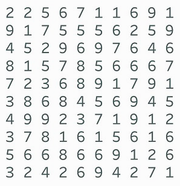
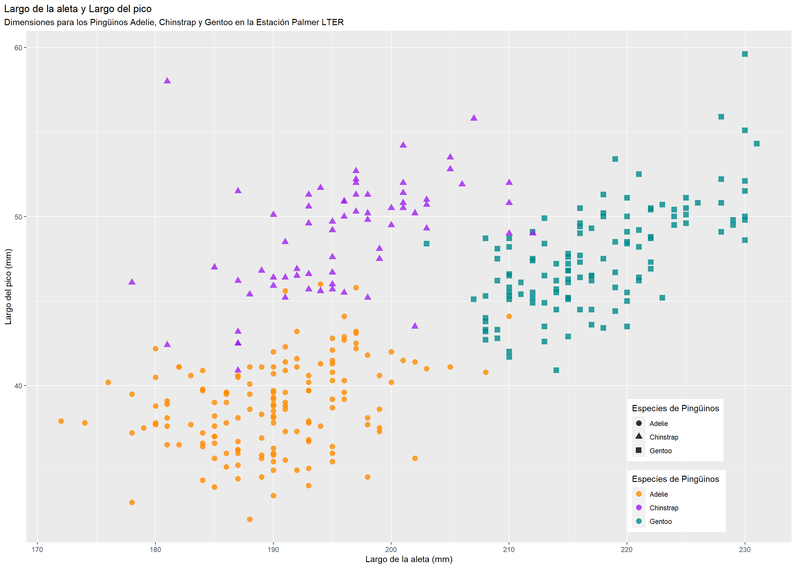

| a.x | a.y | b.x | b.y | c.x | c.y | d.x | d.y |
|---|---|---|---|---|---|---|---|
| 10 | 8.04 | 10 | 9.14 | 10 | 7.46 | 8 | 6.58 |
| 8 | 6.95 | 8 | 8.14 | 8 | 6.77 | 8 | 5.76 |
| 13 | 7.58 | 13 | 8.74 | 13 | 12.74 | 8 | 7.71 |
| 9 | 8.81 | 9 | 8.77 | 9 | 7.11 | 8 | 8.84 |
| 11 | 8.33 | 11 | 9.26 | 11 | 7.81 | 8 | 8.47 |
| 14 | 9.96 | 14 | 8.10 | 14 | 8.84 | 8 | 7.04 |
| 6 | 7.24 | 6 | 6.13 | 6 | 6.08 | 8 | 5.25 |
| 4 | 4.26 | 4 | 3.10 | 4 | 5.39 | 19 | 12.50 |
| 12 | 10.84 | 12 | 9.13 | 12 | 8.15 | 8 | 5.56 |
| 7 | 4.82 | 7 | 7.26 | 7 | 6.42 | 8 | 7.91 |
| 5 | 5.68 | 5 | 4.74 | 5 | 5.73 | 8 | 6.89 |
Fundamentos de Analítica y
Visualización de Datos
Rolando Mirabal, Desarrollador de Insights Senior en Viva
28/11/2022

Ciclo del Análisis Visual de Datos

- Tareas y Preguntas
- Obtener los datos
- Elegir el mapeo visual
- Ver datos
- Desarrollar información
- Actuar (compartir)
Atributos preatentivos preatencionales



Atributos preatentivos o preatencionales

Medidas - Datos Contínuos
- son números
- pueden ser medido y agregado.
- nos permite para los datos en medio
- como hay un número infinito de posibles valores intermedios, altura, pero cambia, peso, rentabilidad. monto de ventas

nota.- fecha es ordinal y cuantitativo, el tiempo puede ser ambos. Cuidado a como influencia en la elección de visualización.
Medidas - Datos Discretos
- son números
- pueden ser medidos y agregados
- Predefinidos
- puntos exactos, no hay punto entre ellos (Enteros)

Fecha de nacimiento, altura, apareció N veces en el periódico, años que vive en SCZ. cantidad de ventas
Ejm.:
Alicia Flores, de 82 años, que vive en Santa Cruz 52 años.
Djokovic gana N copas, no n y medio
Vocabulario Visual

1 Gráfica de Barras, aplicados de distinta forma

Gráfica de Dispersión


Gráficas de Balas

Lectura para siguiente clase
Capítulo 3 - R para ciencia de datos